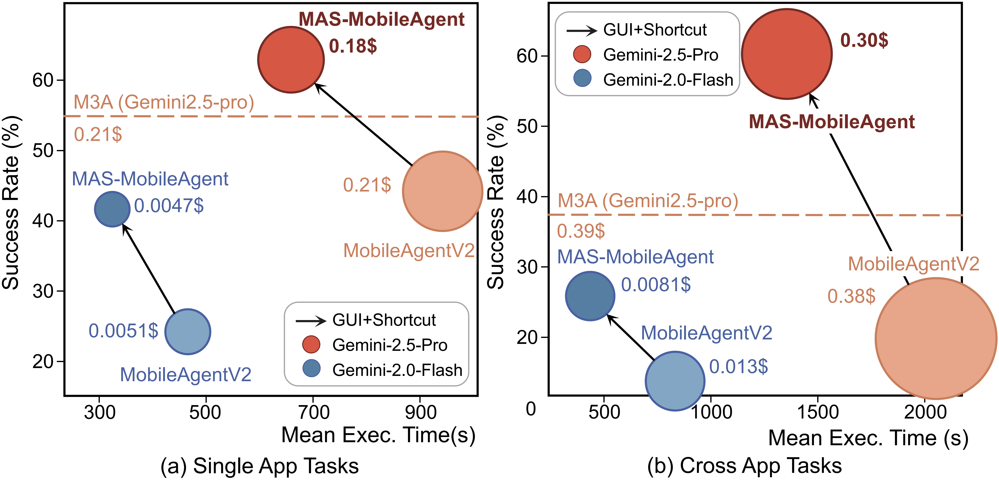
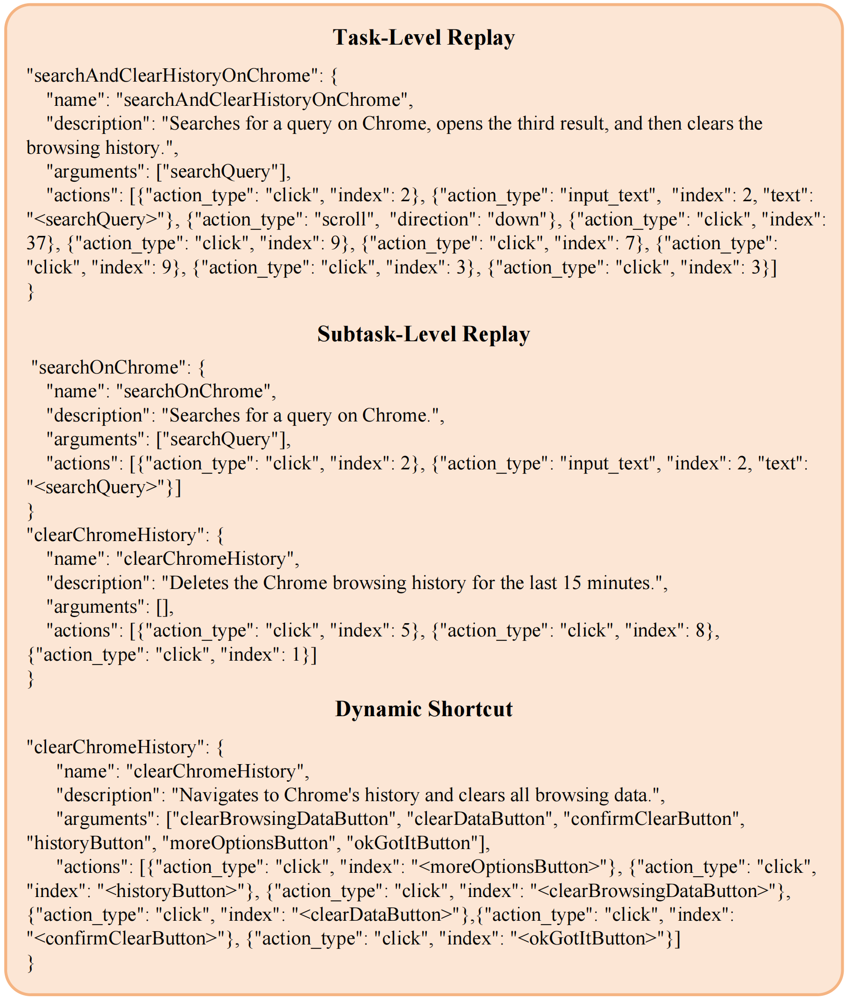
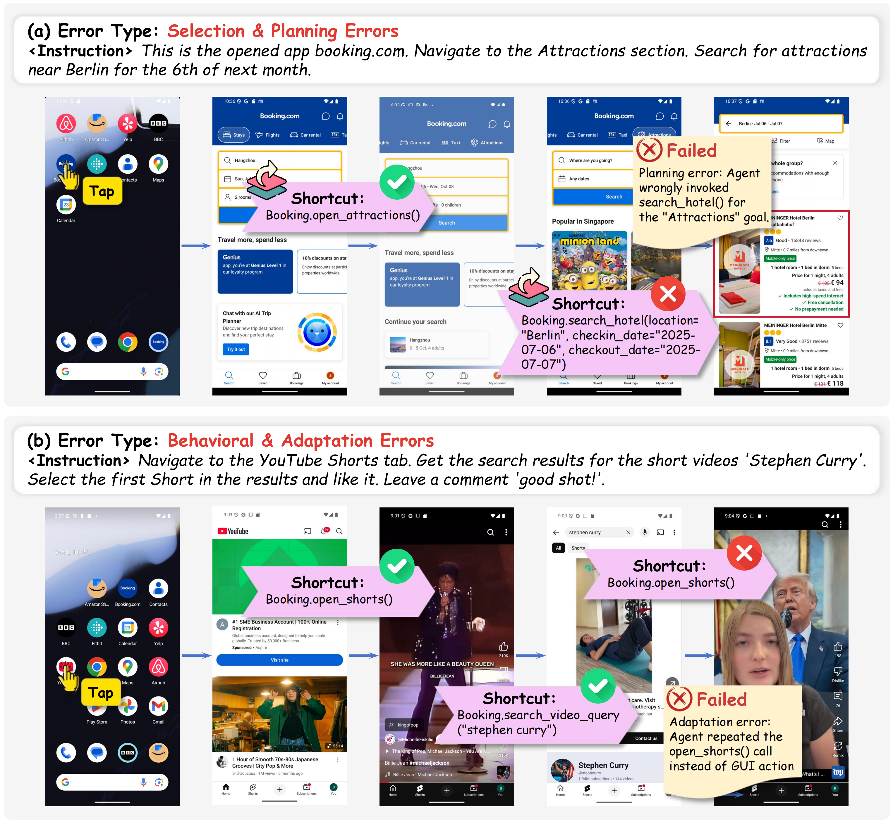

Experiments demonstrate that using the predefined knowledge base of 88 shortcuts significantly improves
task success rate and efficiency across multiple agent families. MAS-GLM-4.5V achieves the best overall
success rate of 68.3%. MAS-MobileAgent improves over its GUI-only counterpart from 35.2% to 63.3% SR,
yielding a 79.8% relative gain and reducing the successful-task step ratio by 38.9%.
| Agent |
Input |
SR ↑ |
Efficiency |
Cost |
S2GR ↑ |
| SS |
VH |
MS ↓ |
MSRS ↓ |
MET ↓ |
MToC ↓ |
MSC ↑ |
| Agentic Workflow (Gemini-2.5-Pro) |
| Human |
✓ |
|
- |
12.11 |
1.000 |
- |
- |
- |
- |
| M3A |
✓ |
✓ |
0.503 |
16.655 |
1.131 |
266.505 |
200.509 |
0 |
0 |
| MobileAgent-E |
✓ |
|
0.259 |
4.808 |
0.857 |
462.636 |
87.819 |
1.011 |
0.114 |
| T3A |
|
✓ |
0.453 |
15.755 |
1.067 |
178.005 |
440.919 |
0 |
0 |
| + MAS-T3A (Ours) |
|
✓ |
0.554 |
12.768 |
0.823 |
148.505 |
341.402 |
1.438 |
0.140 |
| MobileAgentV2 |
✓ |
|
0.352 |
19.252 |
1.122 |
1364.979 |
156.441 |
0 |
0 |
| + MAS-MobileAgent (Ours) |
✓ |
|
0.633 |
12.928 |
0.686 |
951.918 |
130.980 |
1.948 |
0.341 |
| General-Purpose Models |
| Qwen2.5-VL-3B |
✓ |
|
0.036 |
21.626 |
1.341 |
120.975 |
- |
0 |
0 |
| Qwen2.5-VL-7B |
✓ |
|
0.022 |
21.835 |
1.498 |
168.832 |
- |
0 |
0 |
| Qwen3-VL-4B |
✓ |
|
0.228 |
17.547 |
1.273 |
179.208 |
- |
0 |
0 |
| + MAS-Qwen3-VL-4B (Ours) |
✓ |
|
0.237 |
20.403 |
0.971 |
188.078 |
- |
2.461 |
0.170 |
| Qwen3-VL-8B |
✓ |
|
0.259 |
16.576 |
1.183 |
179.377 |
- |
0 |
0 |
| + MAS-Qwen3-VL-8B (Ours) |
✓ |
|
0.425 |
14.921 |
0.868 |
155.977 |
- |
1.309 |
0.110 |
| Qwen3-VL-32B |
✓ |
|
0.338 |
17.834 |
1.207 |
394.102 |
- |
0 |
0 |
| + MAS-Qwen3-VL-32B (Ours) |
✓ |
|
0.446 |
15.913 |
0.848 |
358.282 |
- |
3.216 |
0.276 |
| Qwen3-VL-235B |
✓ |
|
0.417 |
16.604 |
1.111 |
185.201 |
- |
0 |
0 |
| + MAS-Qwen3-VL-235B (Ours) |
✓ |
|
0.525 |
14.424 |
0.785 |
152.652 |
- |
2.784 |
0.233 |
| GLM-4.5V |
✓ |
|
0.526 |
17.237 |
1.194 |
281.928 |
- |
0 |
0 |
| + MAS-GLM-4.5V (Ours) |
✓ |
|
0.683 |
14.050 |
0.900 |
238.579 |
- |
1.051 |
0.097 |
| Specialized GUI Models |
| UI-TARS-1.5-7B |
✓ |
|
0.287 |
19.209 |
1.191 |
188.143 |
- |
0 |
0 |
| GUI-Owl-7B |
✓ |
|
0.295 |
15.568 |
1.239 |
168.148 |
- |
0 |
0 |
| ScaleCUA-7B |
✓ |
|
0.108 |
18.194 |
1.202 |
123.018 |
- |
0 |
0 |
| + MAS-ScaleCUA-7B (Ours) |
✓ |
|
0.115 |
19.446 |
1.358 |
141.535 |
- |
0.007 |
0.000 |
| ScaleCUA-32B |
✓ |
|
0.231 |
19.209 |
1.286 |
141.654 |
- |
0 |
0 |
| + MAS-ScaleCUA-32B (Ours) |
✓ |
|
0.216 |
18.935 |
1.260 |
140.126 |
- |
0.000 |
0.000 |
| MAI-UI-8B |
✓ |
|
0.489 |
19.237 |
1.247 |
180.678 |
- |
0 |
0 |
| + MAS-MAI-UI-8B (Ours) |
✓ |
|
0.583 |
18.065 |
1.179 |
169.463 |
- |
0.273 |
0.018 |
Table: Overall performance comparison on MAS-Bench with predefined
shortcuts knowledge base (139 tasks). Results are weighted averages based on task
distribution (92 single-app, 47 cross-app tasks). Methods marked with "+" are shortcut-augmented
variants of their corresponding baselines. SS: Screenshot; VH: View Hierarchy; MS: Mean Steps; MSRS:
Mean Step Ratio on Successful tasks; MET: Mean Execution Time (seconds); MToC: Mean Token Cost (in
thousands); MSC: Mean Shortcut Call Count; S2GR: Shortcut-to-GUI action Ratio.

Figure: Performance comparison of MAS-MobileAgent with and without
shortcuts. The base models are Gemini-2.5-Pro and Gemini-2.0-Flash. Data points show the
relationship between SR and MET for single-app and cross-app tasks, with circle size representing mean
cost. Results demonstrate that shortcuts benefit both models, with more significant improvements for
the weaker Gemini-2.0-Flash.

Figure: Examples of the resulting shortcut types. Action Replay shortcuts (Task-Level and Subtask-Level) use a sequence of actions with fixed indices, while Dynamic Shortcuts use variable arguments that correspond to UI elements.
| Shortcut |
SR ↑ |
SSR ↑ |
MSRS ↓ |
MSC ↑ |
MET ↓ |
| Human |
- |
- |
1.00 |
- |
- |
| Baseline |
0.43 |
- |
0.96 |
- |
188.93 |
| SPredefined |
0.52 |
1.00 |
0.71 |
1.45 |
152.15 |
| SReplay-Task |
0.34 |
0.10 |
0.91 |
3.04 |
244.61 |
| SReplay-Subtask |
0.43 |
0.73 |
1.13 |
1.22 |
236.67 |
| SDynamic |
0.38 |
0.75 |
0.82 |
0.91 |
216.24 |
| SMobileAgent-E |
0.49 |
0.71 |
1.00 |
1.01 |
224.87 |
Table: The results of different shortcut generation methods.
Column definitions: SR (success rate), MSRS (Mean Step Ratio on Successful tasks), MSC (Mean Shortcut
Call Count), SSR (Shortcut Success Rate), MET (Mean Execution Time).

Figure: Examples of GUI-shortcut hybrid agent failure cases.
(a) Selection and Planning Error: the agent incorrectly invokes the search_hotel() shortcut
instead of searching for attractions. (b) Behavioral and Adaptation Error: the agent repeatedly calls
the open_shorts() shortcut instead of switching to a GUI-only action to select the video.